Recipes
Drafted with AI, not yet reviewed
The clearances here are starting points that suit most printers: print a test piece, and adjust them for yours. Nothing here has been tested for strength.
Rounding and chamfering
An exact field grown by r has every convex edge rounded with radius r.
So a shape is rounded on the outside by building it r smaller, then offsetting it by r.
The round options of the prelude’s shapes and extrusions do this, and chamfer cuts the edges at 45 degrees instead.
A block with every edge rounded by 2.
cuboid([40, 20, 10], #{round: 2})
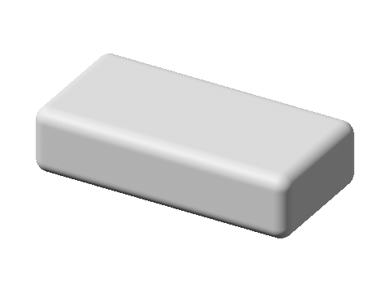
A plate with round corners, its rims chamfered by 0.6, the bottom one against elephant’s foot.
rect([40, 20], #{round: 4}) .extrude([0, 6], #{chamfer: 0.6})
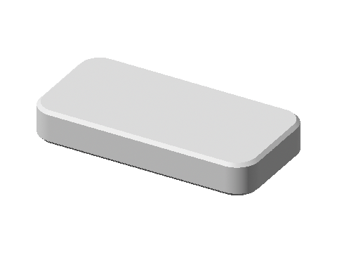
Concave edges, where two parts meet, are filleted by the combination that joins them.
union_chamfer chamfers them instead.
A post on a base, with a fillet of 3 round its foot.
let base = cuboid([40, 40, 4], #{anchor: "bottom"}); base.union_round(cylinder(5, [0, 30]), 3)
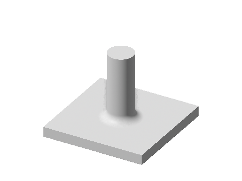
The rim of a hole or a pocket is rounded or chamfered by the cut.
A plate with an M3 hole, chamfered by 0.5 at both ends.
cuboid([20, 20, 5]) .difference_chamfer(cylinder(1.7, 20), 0.5)
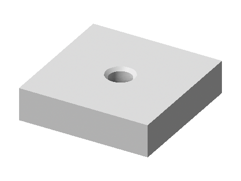
In 2D, rounded_polygon rounds a polygon’s corners: the convex ones by its radius, and the concave ones by its concave option.
union_round fillets the corners where 2D shapes meet.
An angle bracket, its outer corners rounded by 1 and its inner corner by 4.
let profile = [ [0, 0], [40, 0], [40, 5], [5, 5], [5, 30], [0, 30], ]; rounded_polygon(profile, 1, #{concave: 4}) .extrude(20)
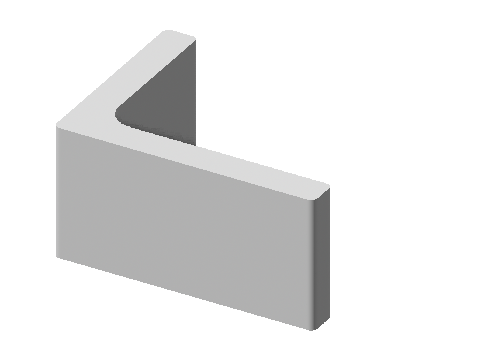
Shells and hollow parts
shell(s, t) keeps a wall t thick inside the surface of s.
It is exact when s is.
A shell is closed, so it is opened by a cut.
A box with 2 mm walls and rounded edges, cut open at z = 25.
let outside = cuboid([60, 40, 30], #{round: 4, anchor: "bottom"}); outside.shell(2).intersection(z - 25)
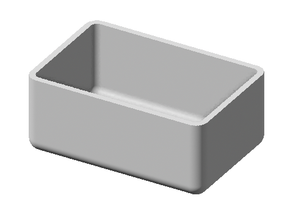
A wall centred on the surface instead is abs(s) - t / 2.
Clearances and fits
Parts that fit together need a gap.
On most printers, it is about 0.2 mm on a side for a sliding fit, and 0.1 mm for a press fit.
clearance(part, other, gap) cuts other, grown by gap, out of part.
On exact fields the gap is even all round, edges included.
A socket for a rounded peg, 0.2 larger than the peg all round.
let peg = cuboid([10, 10, 20], #{round: 1}).move([0, 0, 12]); cuboid([20, 20, 15], #{anchor: "bottom"}).clearance(peg, 0.2)
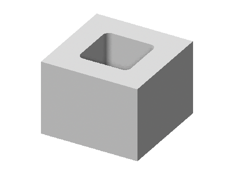
Holes print smaller than drawn, by a few tenths for small ones.
Grow them with offset, or draw them larger.
Screw holes and nuts
The fasteners are cutters, to subtract from a part.
Each one’s z = 0 is a plane its documentation names, such as where a screw’s head rests.
Above it, each is open without end, so it clears whatever lies over the hole, except nut_slot, whose pocket is centred on z = 0.
Three M3 holes: one counterbored 2 mm, one countersunk flush, and one for a heat-set insert.
let plate = cuboid([40, 20, 6], #{anchor: "bottom"}); let holes = [ screw_hole("M3", 10).move([-12, 0, 4]), screw_hole("M3", 10, #{head: "countersunk"}).move([0, 0, 6]), insert_hole("M3").move([12, 0, 6]), ]; plate.difference(union(holes))
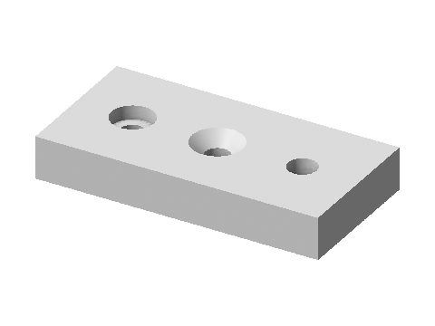
A nut trap from below is a nut_trap turned over, with the screw’s hole through it.
An M3 nut trap in a plate’s underside, seen from below.
let plate = cuboid([20, 20, 6], #{anchor: "bottom"}); let trap = union( nut_trap("M3", 3).reflect_z(), screw_hole("M3", 20, #{head: "none"}) ); plate.difference(trap)
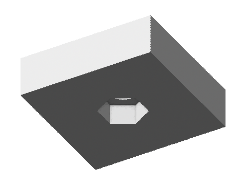
Horizontal holes
A round hole along X or Y has a flat overhang at its top.
A teardrop cross-section puts a 45-degree point there instead.
Extrude it along Z, then turn it so that its +Y becomes +Z: rotate_x(90) for a hole along Y, and rotate_x(90).rotate_z(90) for one along X.
An M3 hole along X through a block, its point up.
let hole = teardrop(1.7) .extrude(40) .rotate_x(90) .rotate_z(90); cuboid([30, 16, 12]).difference(hole)
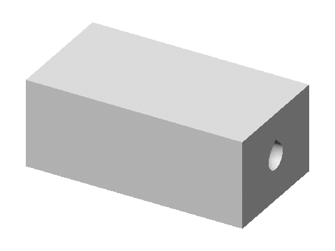
Patterns
linear_array makes a row of copies, grid_array a grid, and polar_array a circle of them.
A flange: six holes round a circle of radius 20, and a bore.
let hole = cylinder(2, 10); let ring = hole.move([20, 0]).polar_array(6); let cutters = union(ring, cylinder(8, 10)); cylinder(30, [0, 4]).difference(cutters)
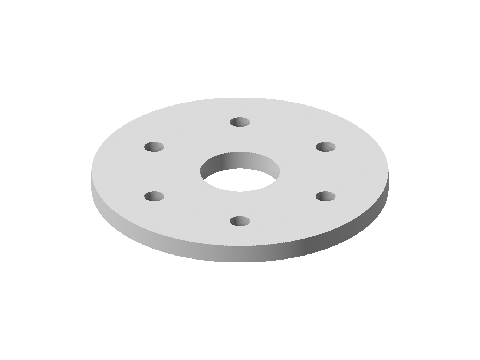
For many small features, the repeat functions cost the same as one copy.
Each copy must stay in its cell; for copies that overlap, use the *_array functions.
repeat, which repeats without end, suits textures, cut to size with intersection.
200 vent holes in a 2 mm plate.
let vents = cylinder(1.5, 4) .repeat_grid([5, 5], [20, 10], #{center: true}); cuboid([110, 60, 2]).difference(vents)
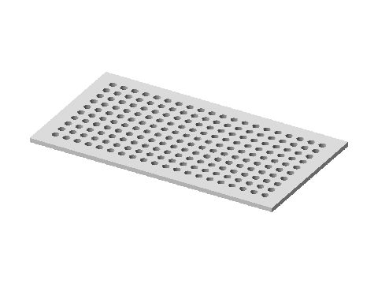
Reference geometry
Everything drawn is exported.
To see a part among what it fits, draw the surroundings behind a constant, and set it to false before exporting.
A clip on a table’s edge, the table drawn only while PREVIEW is true.
const PREVIEW = true; let table = cuboid([60, 40, 18], #{anchor: [1, 0, 1]}); let slot = rect([10, 18.4]).move([-3, 0]); let clip = rect([14, 24]) .difference(slot) .extrude(20) .rotate_x(90) .move([-1.8, 0, -9]); draw_rgb(clip, 0.95, 0.55, 0.2); if PREVIEW { draw_rgb(table, 0.65, 0.5, 0.35); }
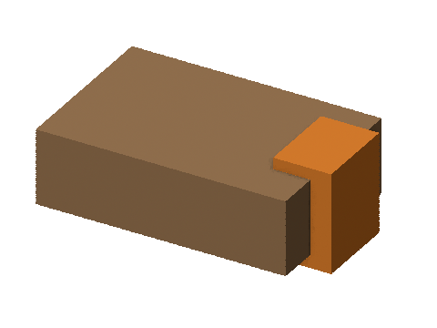